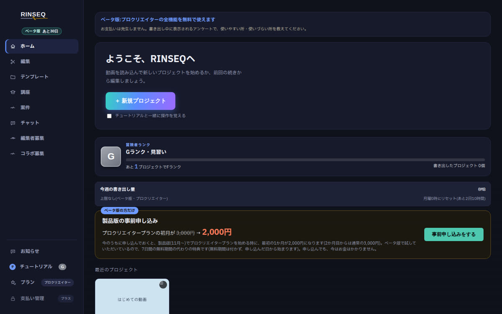
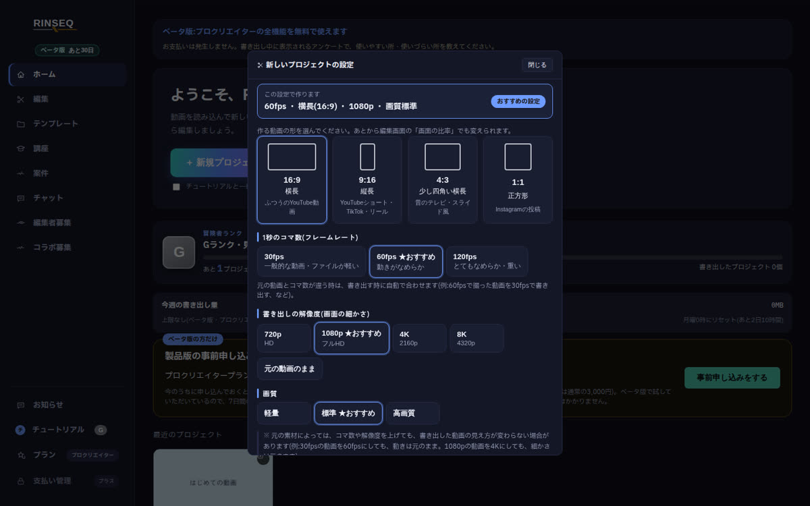
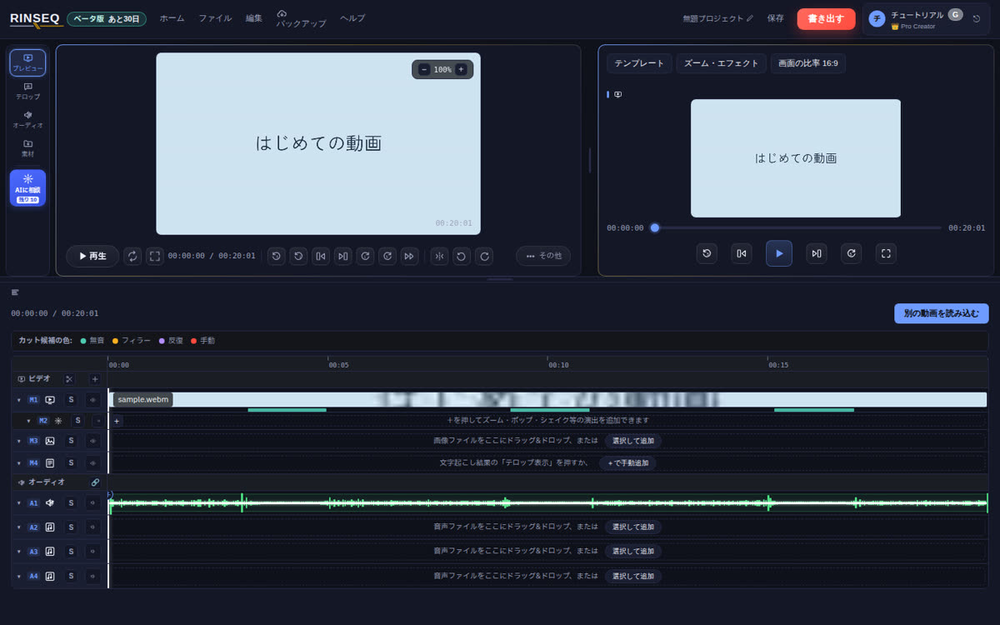
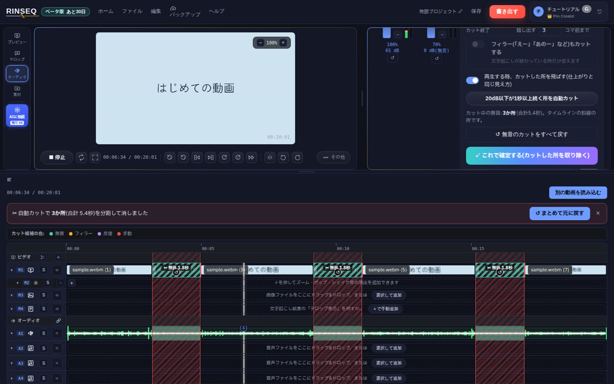
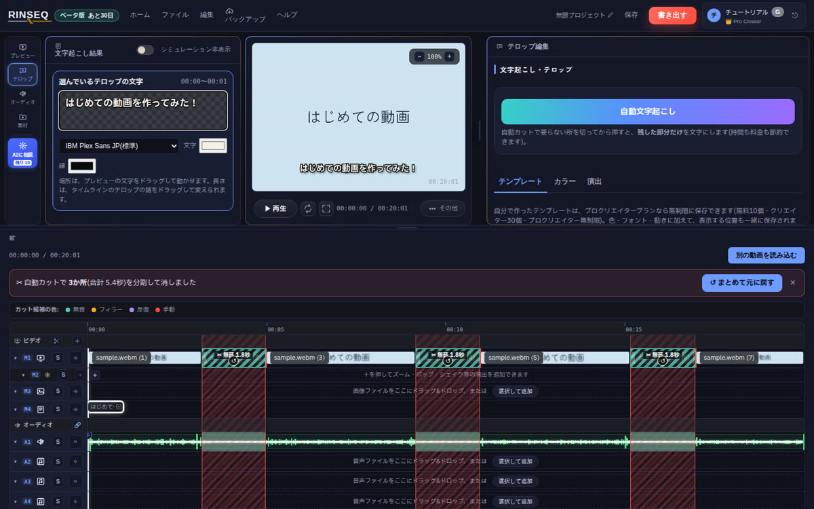
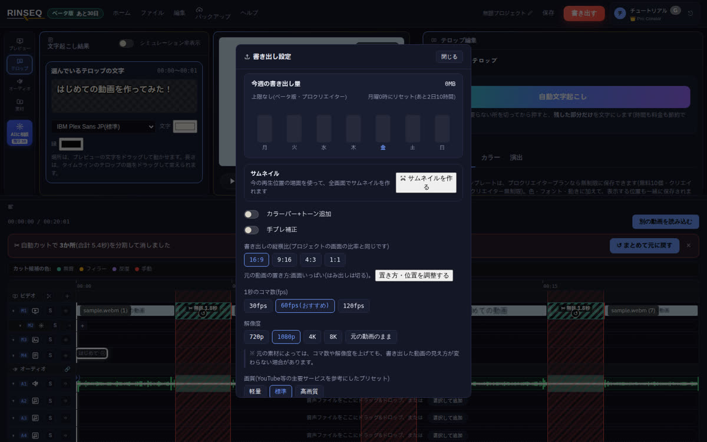

はじめての動画を5ステップで作る|RINSEQ β版の使い方入門
私がはじめて動画編集をした時、いちばん困ったのは「ボタンの意味がわからない」ことでした。この記事では、専門用語をできるだけ使わずに、ボタンの場所を画面の画像で1つずつ説明します。
画面は、運営者が作っているソフト「RINSEQ」のβ版(2026年10月時点)です。これから新しい版で、見た目が少し変わることがあります。
この記事でできるようになること
- 撮った動画を読み込む
- しゃべっていない(無音の)所を、自動でまとめてカットする
- テロップ(画面に出る文字)を入れる
- YouTubeに投稿できる動画ファイルにする(書き出し)
用意するもの:パソコン(Mac:M1以降/Windows:64bit版)と、スマホなどで撮った動画1本
かかる時間:30分くらい
STEP1 RINSEQを入れて開く
RINSEQの公式サイトから、自分のパソコン用(Mac版かWindows版)をダウンロードして開きます。はじめて開いた時に、メールアドレスとパスワードで登録します。
登録すると、下のようなホーム画面が出ます。β版の間は、上のプラン(プロクリエイター)の編集機能をお支払いなしで使えます。

つまずきポイント:β版は、はじめて開く時にMacやWindowsの確認画面(「開いてよいですか?」のような表示)が出ることがあります。公式サイトのQ&Aに開き方が書いてあります。
STEP2 動画を読み込む
ホーム画面の「+ 新規プロジェクト」を押します。作る動画の形を選ぶ画面が出るので、ふつうのYouTube動画なら16:9(横長)のまま、下の「この設定で作成する」を押します。

編集画面が開いたら、「動画ファイルを選択」を押して動画を選びます(動画を画面にドラッグして入れることもできます)。読み込むと、下の「タイムライン」に動画と音の波が並びます。

ポイント:タイムラインの下に出る緑色の線は、RINSEQが見つけた「しゃべっていない所」の候補です。次のSTEPで使います。
STEP3 しゃべっていない所を自動でカットする
動画編集でいちばん時間がかかるのが、「えーと…」の間や、しゃべっていない所を1つずつ切る作業です。RINSEQでは、これをまとめて自動でできます。
左の「オーディオ」を押し、右側の「○dB以下が○秒以上続く所を自動カット」のボタンを押します。カットするトラックを聞かれたら「すべてのトラックをカットする」を選びます。

斜線が入った所が、カットされた部分です。再生すると、カットした所を飛ばして、できあがりと同じ見え方で確認できます。よければ「これで確定する」を押します。
つまずきポイント:カットされすぎた時は、「無音とみなす音量」の数字を小さくしてやり直します。1か所だけ戻したい時は、斜線の上の「↺」を押します。全部やり直したい時は「まとめて元に戻す」で戻せます。
STEP4 テロップを入れる
タイムラインのM4(テロップの行)にある「+で手動追加」を押すと、今の再生位置に1秒のテロップが入ります。左に出る入力欄に、文字を打ちます。

入力欄の下で、フォントや文字の色・縁の色を変えられます。場所は、プレビューに出ている文字をドラッグして動かします。出ている長さは、タイムラインのテロップの端をドラッグして変えます。
ポイント:しゃべりが多い動画なら、「自動文字起こし」で、しゃべった言葉をそのままテロップにすることもできます(高精度の文字起こしは、β版では月80分まで)。
STEP5 書き出す
右上の赤い「書き出す」を押すと、書き出しの設定が出ます。はじめは「おすすめ」と書かれた設定のままで大丈夫です(60fps・1080p・標準)。一番下のボタンで書き出しを始めると、パソコンの中に動画ファイルができます。

できた動画ファイルを、YouTubeの「作成」→「動画をアップロード」から投稿すれば完成です。書き出しの画面の「サムネイルを作る」から、サムネイルも作れます。
ことばの説明
タイムライン
画面の下にある、動画や音を時間の順に並べた帯のことです。左が動画のはじめ、右が終わりです。
カット
動画のいらない所を切り取ることです。
テロップ
画面に出る文字のことです。字幕と同じ意味で使われることもあります。
書き出し
編集した内容を、1本の動画ファイルにすることです。書き出すまでは、YouTubeに投稿できる形にはなっていません。
dB(デシベル)
音の大きさを表す数字です。RINSEQでは、この数字より小さい音を「しゃべっていない所」とみなします。